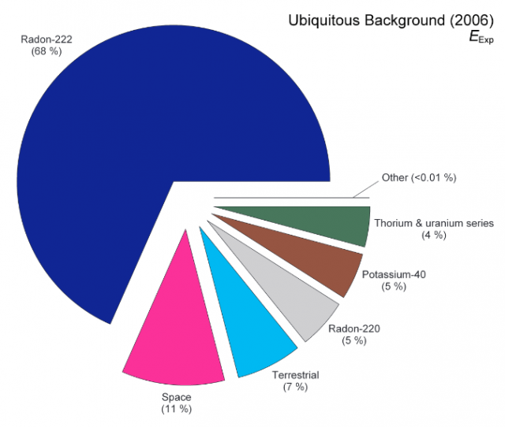

基础知识/辐射与生活
背景辐射
背景辐射（英语：background radiation），又称本底辐射，是在环境中持续存在，可以是源自人为排放或自然存在的辐射，主要的来源有：
- 来自地球的：这些包括来自食物和水、地上的物体及其它建筑材料的产品等，合并起来一起产生的辐射源；
- 来自太空的：以宇宙线的形式呈现；
- 来自大气层的：主要来自由地壳内经过放射性衰变散逸至大气层内的氡，随后的衰变会使大气层内的灰尘和微粒都带有辐射。
另外的贡献是源自高能宇宙射线轰击大气层中的原子产生的放射性元素。
大约有3%的背景辐射来自其他的人造来源，像是：
- 自己发光的罗盘和信号。
- 由于过去的核武试爆造成全球的辐射污染。
- 核电厂或核燃料处理场的事故。
- 用于核电厂的设施和科学研究的正常操作。
- 燃烧的矿物燃料的排放，像是火力发电的燃煤。
- 核子医学设施和病人的正常排放。
- 核子医学使用的放射性物质回收或处理不当造成的排放。
意外的暴露在人造的放射源下会导致接收到数倍于天然或正常的人造辐射暴露量。另外，放射性治疗也会造成较高的辐射接触。然而，来自自然背景辐射的暴露，还是接收到的辐射主要来源。
天然本底辐射无处不在。背景辐射因地而异，随时间而变化，这取决于土壤、水和空气中天
然存在的放射性元素的数量。天气条件也会影响辐射水平，因为积雪可能会屏蔽这些元素，
而放射性微粒会在暴雨期间从空气中冲走。来自太阳、我们的银河系以及更远处的宇宙辐射
不断地围绕着我们，并有增加于自然背景辐射。海拔高度和纬度也会影响任一地点的背景辐射
水平。
所有的岩石和土壤都含有一些微量的天然放射性物质，如果受到干扰，有时会被摄入或吸
入。氡是一种可以在室内集中并被吸入的气体，连同它的衰变产物。我们还可以从我们吃的
食物和喝的水中摄取放射性。
许多因素决定了您和您的家人每年从背景辐射中接受的剂量。下表显示了每年从各种自然来
源接收到的背景辐射剂量的百分比。

背景辐射来源整理
这里用了维基的API，如果你看着很奇怪说明表格没有加载出来需使用梯子才能正确显示
| 辐射来源 | 全世界 | 美国 | 日本 | Remark |
|---|---|---|---|---|
| 空气 | 1.26 | 2.28 | 0.40 | 主要来自空气中的 |
| 食物与饮水 | 0.29 | 0.28 | 0.40 | K-40, C-14等 |
| 来自地面 | 0.48 | 0.21 | 0.40 | 与土壤或建材相关 |
| 宇宙辐射 | 0.39 | 0.33 | 0.30 | 与海拔高度相关 |
| 小计（自然来源） | 2.40 | 3.10 | 1.50 | |
| 医疗 | 0.60 | 3.00 | 2.30 | 全世界的统计中排除放射线疗法 美国统计中多为电脑断层与核子医学 |
| 消费 | - | 0.13 | 自抽烟、航空飞行、建筑物等 | |
| 核子试爆 | 0.005 | - | 0.01 | 1963年极值为0.01msv，随时间下降至今，越接近试爆点越高 |
| 职业暴露 | 0.005 | 0.005 | 0.01 | 全世界工人平均为0.7 mSv, 多为矿坑中的氡 美国多为医疗与航空从业者 |
| 切尔诺贝利核灾 | 0.002 | - | 0.01 | 1986年极值为0.04，随时间下降至今，越接近事故地点越高 |
| 核电厂的核燃料循环 | 0.0002 | 0.001 | 接近发生源时可高至0.02 mSv | |
| 其他 | - | 0.003 | ||
| 小计（人工来源） | 0.61 | 3.14 | 2.33 | |
| 总计 | 3.01 | 6.24 | 3.83 | millisievert per year |